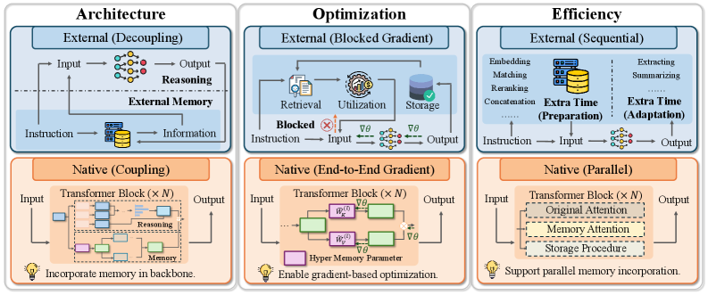
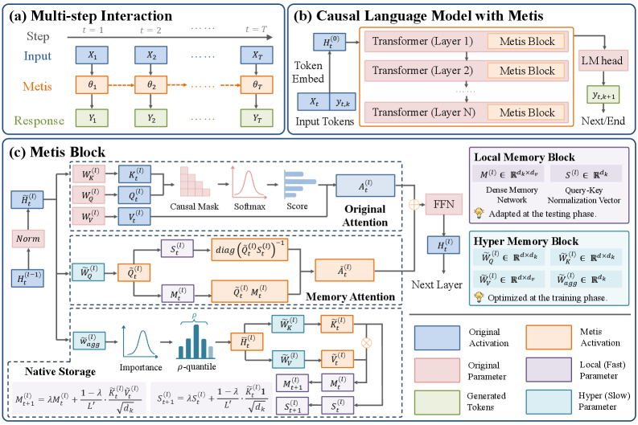
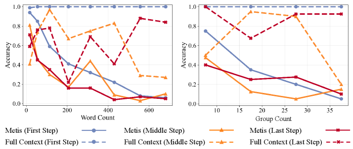
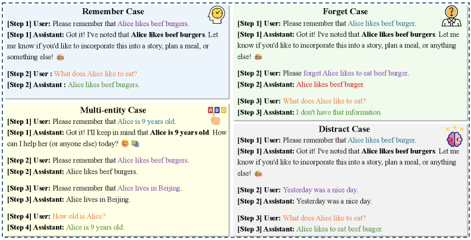
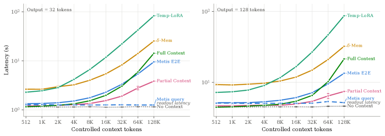
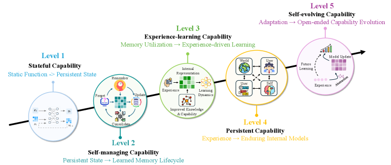

近年来大模型快速发展，支撑起AI agents处理复杂任务。在推理能力之外，记忆是AI agent的另一项关键能力：负责保留过去信息并用于支持未来推理。此前绝大多数工作把记忆实现为模型外部模块（典型如RAG检索文本进prompt），真正的原生记忆能力几乎未被探索。MemTensor（上海）与多所高校提出的Metis，迈出第一原型：用「记忆基础模型」把记忆从外部模块变成backbone的内部机制，直接参与前向计算。 在线记忆维护全程无梯度、每次更新只需一次前向；推理时所有权重冻结，原生记忆状态随标准前向计算自主演化。
大多数之前的工作把记忆实现为模型外部的模块。代表性做法是用检索增强生成（RAG）检索相关文本信息并拼进prompt来辅助推理。但外部记忆有三个结构性局限： ① 与backbone解耦、目标与处理阶段分离：外部记忆旨在构造有信息量的上下文输入，backbone只对构造好的上下文做条件语言建模，因此记忆未必提供对backbone推理最有用信息，backbone也未必最优利用记忆；② 端到端优化困难：梯度无法有效穿过离散记忆操作传播，领域特定后训练极具挑战；③ 需要在backbone外对存储做额外显式操作，不可避免增加在线推理时延。

记忆基础模型把记忆从外部模块转化为backbone的内部机制，直接参与前向计算：基于输入指令和原生记忆生成回复，并自主做记忆变换。原生态记忆从两个关键方面定义：
原生记忆状态（Native Memory State）：记忆基础模型跨多次推理保持状态（stateful）：在backbone内部形成、维护、利用来自先前推理的记忆状态。记忆状态动态地表示成backbone参数的一部分，其语义空间在预训练或中间训练阶段对齐。与之相对，静态参数中包含的是交互前的离线知识（严格说不算记忆，因为不含个人化轨迹信息、不需实时适应）。
原生记忆过程（Native Memory Procedure）：不同于记忆工程，记忆基础模型把记忆过程原生集成进推理。记住、遗忘、更新等具体记忆操作在前向计算中自主完成，随输入指令影响原生记忆状态。因记忆状态以动态参数表示、记忆过程通过计算执行，记忆基础模型可以像普通基础模型那样，用数据驱动方式做领域适配的后训练：这与从基础模型到推理模型（native CoT）的演化如出一辙。
从记忆的角度看，在线信息的「时间流」属性带来根本问题：存储阶段无法预知信息将如何被用作；推理阶段原始信息已不可得，只能用已存信息。因此记忆本质上是预测问题：模型预测收到的信息将来如何被利用。既然记忆过程应在连续函数空间建模、经数值计算与backbone前向紧密耦合，规则型外部操作在离散函数空间里难以达到最优预测性能。

vs测试时训练（TTT）：三点不同。① TTT通常在单个序列内适应模型，动态参数更新以更好拟合当前输入；记忆基础模型定义在多步交互下，动态参数充当跨先前步的持久原生记忆状态并支持未来推理。② TTT不显式提供原生记忆过程，其更新常由自监督语言建模驱动；记忆基础模型用记忆重建与记忆操作目标训练，使模型自主在潜参数空间执行语义记忆操作。③ TTT多动机于高效长上下文建模、常引入循环层替代全注意力；记忆基础模型不替代当前步的标准全注意力，而是通过原生记忆状态以残差形式引入跨步信息。TTT主要是推理时适应机制，而记忆基础模型把记忆建立为持久的、指令驱动、过程感知的能力。
vs记忆增强神经网络（MANNs）：MANN引入额外记忆模块（可微记忆槽、学习读写操作），但记忆模块通常是受神经控制器控制的独立存储组件，仍外在于主模型参数。记忆基础模型把记忆内化进backbone计算：记忆状态以参数形式表示直接参与前向，记忆过程也用与backbone相同的连续函数空间建模，而非独立控制器。
vs其他：与In-place TTT、MemGen、δ-Mem等仍依赖上下文文本记忆并加潜摘要不同，记忆基础模型把文本记忆彻底移出上下文。与主要处理离线文档的MEMO、MemFT不同，记忆基础模型聚焦测试时信息。相比Memory3从离线语料编码可检索显式记忆，记忆基础模型把在线交互获取的信息内化为backbone内持久动态状态，并经原生记忆过程跨多步自主维护变换。
Metis采用因果语言模型作为记忆基础模型的原型实现。受Fast Weight Programming (FWP) 启发，Metis设计了带原生记忆状态的模型架构，通过记忆注意力（memory attention）集成进backbone计算。 具体地，Metis blocks作为原生记忆的基本单元，每个主要由hyper memory block（超记忆块）和local memory block（局部记忆块）组成。

原生记忆状态采用参数化记忆而非文本记忆：文本记忆虽有可解释性和跨模型兼容性的优势，但其离散表示信息密度低、需要重复预填充；参数化记忆以密集形式表示先前信息，提升存储与利用效率。动态参数与静态参数的语义空间需在预训练/中间训练阶段对齐，使不同步的动态参数能与静态参数协同计算。
在线记忆维护是免梯度的：记忆更新只需前向pass；推理时所有学习到的模型权重保持冻结，原生记忆状态经标准前向计算自主变换。这是效率的核心来源。
训练是这样完成的：为支持Metis学习原生记忆能力，研究者从公开数据集构造大规模记忆特定训练数据（提取种子实体的多轮骨架：显式/隐式/干扰三种风格），设计记忆重建目标与记忆操作目标（对应记忆状态的压缩上限与操作目标），并加正则化目标增强复杂场景鲁棒性，通过中间训练（mid-training）让模型习得原生记忆过程。
记忆操作任务（MemOps）：模型接收三段完整证据（Full设置24个话语）或仅oracle轮（Gold设置），评测记住/遗忘/更新/反思操作。全文模型整体最强，但去掉上下文时标准backbone大幅下降；部分上下文在Metis测试集保留部分信息却在MemOps (Gold) 表现差，说明不完整历史无法可靠支撑记忆操作。 Temp-LoRA与 δ-Mem恢复部分损失但增益有限。在相同无上下文设置下，Metis在MemOps (Gold) 与Metis测试集都取得最佳平均结果：证明Metis能把信息保存在原生记忆状态并用于后续步骤，无需重放原始上下文。

规模效应：Metis-27B在无上下文设置下两基准平均最佳，相对4B/9B在记住、更新、反思及整体表现明显提升，遗忘（尤其Metis测试集）提升最大：足够大的backbone能更好构建和利用原生记忆状态；遗忘仍是最难的操作。
效率：长上下文下的优势：在4B规模、单张A800、受控历史512到128K tokens下评测。上下文到32K前Metis端到端时延略高于Full Context；在首个64K点反超。到128K，E2E相对Full Context加速到1.497×（32 token）与1.595×（128 token）。 相比状态型基线，128K下Metis比 δ-Mem快2.40–2.67×、比Temp-LoRA快6.46–8.71×。记忆写入（commit）仅占Metis时延的2.1–4.3%，主要摄取耗时来自历史编码backbone前向。

记忆容量与低秩分解：步级与轨迹级记忆容量实验表明Metis对多步信息的保持能力；低秩分解实验（不同记忆状态秩）揭示记忆状态的信息压缩特性与可分离性，为记忆容量的高效利用提供分析。
尽管Metis在记忆相关任务表现优秀，仍有若干局限：① 长程任务性能退化：历史压缩进固定大小参数造成信息丢失；② 某些情况出现信息混淆：可能源于潜空间中语义的混合。除此之外，实现记忆基础模型的终极目标是彻底消除上下文对外部记忆的依赖。

路线图与方向：原生记忆旨在逐步把基础模型从「无状态预测器」转变成「有状态学习者」，最终成为有能力持续学习与跨会话积累知识的模型。记忆基础模型为研究社区和工业界提供了一条通往记忆基础模型的潜在路径。项目与模型权重已开源（MemTensor / Metis）。
参考：https://arxiv.org/html/2607.26760v1